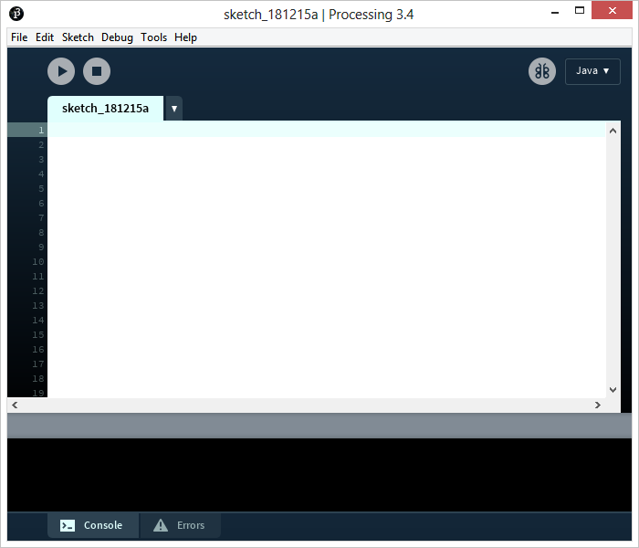

I'm a teenager, brazilian developer who tries to learn mathematical, artistic and scientific concepts through code. I started to learn programming with Khan Academy, which uses a JavaScript library based on Processing, a Java based programming language, to teach their students. In early 2018, I became interested on Processing itself and started to watch Daniel Shiffman's videos about it, which are available here. Since then I've programmed all of my ideas and wishes.
Processing is a Java based open-source programming language and integrated development environment (which can be downloaded here). It's used all arround the world with lots of different purposes and has led to many other projects, including p5.js, Processing.py and Processing.js. It was created in 2001 by Ben Fry and Casey Reas and has a main focus of encouraging people to learn art and mathematics at the same place, at the same time. {% highlight java %} void setup() { print("Hello, World!"); }{% endhighlight %}
